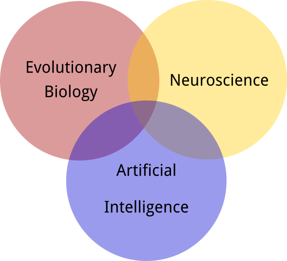
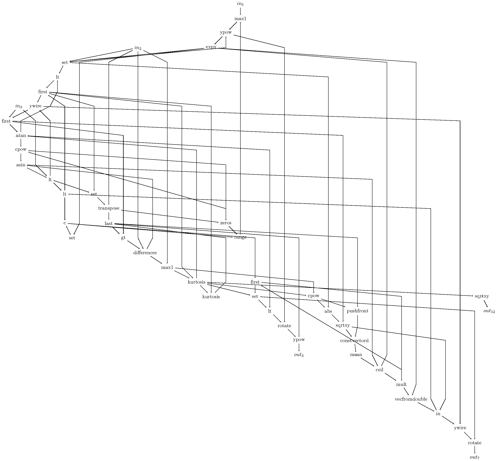
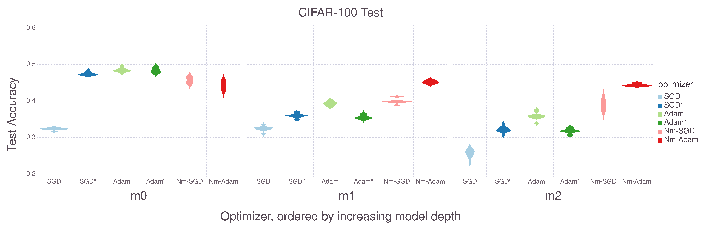

Dennis G. Wilson
dennis.wilson@isae-supaero.fr
Enseignent-Chercheur, ISAE-SUPAERO
Département d’Ingénierie des Systèmes Complexes
Systèmes décisionnels
Background
| 2010 - 2014 | BSci in Electrical Engineering and Computer Science, MIT, Cambridge, USA |
| 2011 - 2014 | Researcher at MIT Computer Science and Artificial Intelligence Lab, ALFA group |
| 2014 - 2016 | Software engineer at Infinidat LTD, Israel |
| 2016 - 2019 | PhD in the REVA team, IRIT, University of Toulouse, France |
| 2019 | Postdoctoral researcher at University of Toulouse |
| 2019- | Associate Professor at ISAE-SUPAERO |
Research Interests
The Brain as Inspiration
Why neurons?

|
|
Adaptive immunity
Sun, Joseph C., Sophie Ugolini, and Eric Vivier. "Immunological memory within the innate immune system." The EMBO journal 33.12 (2014): 1295-1303.
The brain
- Memory, cognition, meta-cognition, abstraction, imagination, planning, adaptation
- Energy efficient
human brain: 2,000 kJ, deep NLP: 1,650,000 kJ - Sample efficient
- Highly plastic
Neurons are the best form of phenotypic plasticity that biological evolution has found to date, enabling adaptation to unknown scenarios during a lifetime.
Strucural Plasticity
Erskine, L., & Herrera, E. (2007). The retinal ganglion cell axon's
journey: insights into
molecular mechanisms of axon guidance.
Developmental biology, 308(1), 1-14.
AGRN Axon guidance

Wilson, D et al. A gene regulatory network model for axon guidance.
Workshop on Developmental Neural Networks, PPSN 2018.
Evolutionary Computation
Evolutionary Algorithms
$1+\lambda$ ES, CMA-ES, Genetic Algorithm
Cartesian Genetic Programming

Wilson, Dennis G., et al. "Positional Cartesian Genetic Programming." arXiv preprint arXiv:1810.04119 (2018).
CGP for Atari playing

Wilson, Dennis G., et al. "Evolving simple programs for playing Atari games."
Proceedings of the Genetic and Evolutionary Computation Conference. ACM, 2018.
CGP Centipede

| Human | Double | DQN | Prioritized | A3C:FF | A3C:LSTM | TPG | HyperNEAT | CGP |
|---|---|---|---|---|---|---|---|---|
| 11963 | 3853.5 | 4881 | 3421.9 | 3755.8 | 1997 | 34731.7 | 25275.2 | 24708 |
CGP Boxing
| Human | Double | DQN | Prioritized | A3C:FF | A3C:LSTM | TPG | HyperNEAT | CGP |
|---|---|---|---|---|---|---|---|---|
| 4.3 | 73.5 | 77.3 | 68.6 | 59.8 | 37.3 | 16.4 | 38.4 |
Comparison
| Game | Human | Double | DQN | Prioritized | A3C:FF | HyperNEAT | CGP |
|---|---|---|---|---|---|---|---|
| Asteroids | 13157 | 1193.2 | 2035.4 | 1654 | 4474.5 | 1694 | 9412 |
| Defender | 27510 | 33996 | 21093.5 | 56533 | 14620 | 993010 | |
| Gravitar | 2672 | 200.5 | 297 | 218 | 303.5 | 370 | 2350 |
| JamesBond | 406.7 | 573 | 835.5 | 3511.5 | 541 | 5660 | 6130 |
| Krull | 2395 | 6796.1 | 8051.6 | 7406.5 | 5560 | 12601.4 | 9086.8 |
| Ms. Pacman | 15693 | 1241.3 | 2250.6 | 1824.6 | 653.7 | 3408 | 2568 |
| Private Eye | 69571 | -575.5 | 292.6 | 179 | 206.9 | 10747.4 | 12702.2 |
| Skiing | -11490.4 | -11928 | -10852.8 | -10911.1 | -7983.6 | -9011 | |
| Solaris | 810 | 1768.4 | 2238.2 | 1956 | 160 | 8324 | |
| YarsRevenge | 6270.6 | 25976.5 | 5965.1 | 7157.5 | 24096.4 | 28838.2 |
Evolving Learning Methods
Neuroevolution
- Direct evolution of neural network weights
Evolutionary Strategies - Direct evolution of neural network weights and structure
NEAT, CGPANN - Indirect evolution of neural network weights
HyperNEAT, Deep Neuroevolution - Evolution of neural network structure
Deep Neuroevolution, Evolutionary Neural Architecture Search - Evolution of learning in neural networks
Cellular Encoding, Developmental Neural Networks, Deep Neuromodulation
Stochastic Gradient Descent

SGD($\eta$, $\alpha$)
Adaptive Moment Estimation (Adam)

Adam($\eta$, $\beta_1$, $\beta_2$, $\epsilon$)
Learning Parameters
| Inputs | Output (SGD) | Output (Adam) |
| $\mu_{\theta}$ | $\eta$ | $\eta$ |
| $\sigma_{\theta}$ | $\alpha$ | $\beta_1$ |
| $\mu_{\nabla Q}$ | $\beta_2$ | |
| $\sigma_{\nabla Q}$ | $\epsilon$ | |
| layer location | ||
| layer size |
Neuromodulation
Wilson, Dennis G., et al. "Neuromodulated Learning in Deep Neural Networks."
arXiv preprint arXiv:1812.03365 (2018).
Image classification: CIFAR-10
Image classification: CIFAR-100


AGRN Outputs
Dr. Gus Eiben